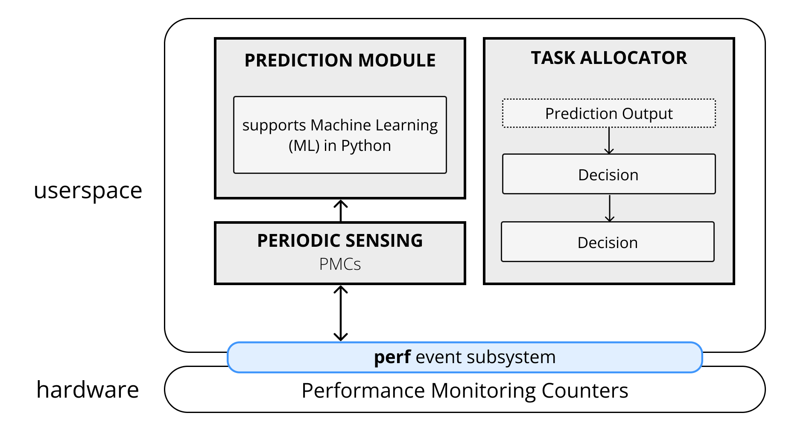

Publications



LUSH: Lightweight Framework for User-level Scheduling in Heterogeneous Multicores
MCSoC '21: International Symposium on Embedded Multicore/Many-core Systems-on-Chip
Vasco Xu, Liam White McShane, Daniel Mossé
Theses
MAZE: A Secure Cloud Storage Service using Moving Target Defense and Secure Shell Protocol (SSH) Tunneling
B.Phil Thesis '20 | University of Pittsburgh
Vasco Xu, Sherif Khattab